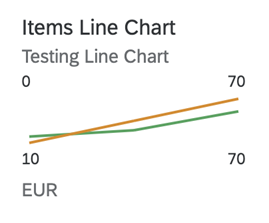

It displays information as a series of data points connected by a line.

In the above chart, the bottom values (10 and 70) represent the dimension values.
They are the IDs of the SalesOrder Items. For more information on
this chart type, see Samples documentation.
The UI.Chart Title property is used for the title.
The UI.Chart Description property is used for the subtitle.
<Annotation Term="UI.Chart" Qualifier="SpecificationWidthtLineChart">
<Record Type="UI.ChartDefinitionType">
<PropertyValue Property="Title" String="Product Width Specification Line Chart"/>
<PropertyValue Property="Description" String="Describe Line Chart"/>
<PropertyValue Property="ChartType" EnumMember="UI.ChartType/Line"/>
<PropertyValue Property="Measures">
<Collection>
<PropertyPath>Width</PropertyPath>
<PropertyPath>Depth</PropertyPath>
</Collection>
</PropertyValue>
<PropertyValue Property="Dimensions">
<Collection>
<PropertyPath>Day</PropertyPath>
<PropertyPath>Day</PropertyPath>
</Collection>
</PropertyValue>
<PropertyValue Property="MeasureAttributes">
<Collection>
<Record Type="UI.ChartMeasureAttributeType">
<PropertyValue Property="Measure" PropertyPath="Width"/>
<PropertyValue Property="Role" EnumMember="UI.ChartMeasureRoleType/Axis2"/>
<PropertyValue Property="DataPoint" AnnotationPath="@UI.DataPoint#Width"/>
</Record>
<Record Type="UI.ChartMeasureAttributeType">
<PropertyValue Property="Measure" PropertyPath="Depth"/>
<PropertyValue Property="Role" EnumMember="UI.ChartMeasureRoleType/Axis2"/>
<PropertyValue Property="DataPoint" AnnotationPath="@UI.DataPoint#Depth"/>
</Record>
</Collection>
</PropertyValue>
</Record>
</Annotation>
<Annotation Term="UI.DataPoint" Qualifier="Width">
<Record>
<PropertyValue Property="Value" Path="Width"/>
<PropertyValue Path="Day1" Property="Title" />
<PropertyValue Property="Description" String=“Line Micro Chart"/>
<PropertyValue Property="TargetValue" Path="Weight"/>
<PropertyValue Property="ForecastValue" Path="Height"/>
<PropertyValue Property="MinimumValue" Decimal="0"/>
<PropertyValue Property="MaximumValue" Decimal="100"/>
<PropertyValue Property="Criticality" Path="criticalityValue"/>
</Record>
</Annotation>
<Annotation Term="UI.DataPoint" Qualifier="Depth">
<Record>
<PropertyValue Property="Value" Path="Depth"/>
<PropertyValue Path="Day2" Property="Title" />
<PropertyValue Property="MinimumValue" Decimal="0"/>
<PropertyValue Property="MaximumValue" Decimal="200"/>
<PropertyValue Property="Criticality" Path="criticalityValue"/>
</Record>
</Annotation>
For semantic coloring, only the Criticality property is
supported. If this resolves to a hard-coded Enum value,
then the entire line is colored with the color corresponding to the
specified value (Criticality.Negative=Red, for
example). If the Criticality property contains a path,
then the value of the last Data Point's Criticality determines the color
of the line.
The unit of measure is plotted using the first entry in the data that is to be plotted.
We recommend to use only one measure, and a maximum of three measures, if you require more measure.
The measure values are shown in the top left and right. When multiple measures are plotted, the smallest of the measure values at the first dimension value is set as the label on the top left, and the largest of the measure values at the last dimension value is set as the label at the top right corner of the micro chart.
Mandatory:
UI.Chart → ChartType:
“Line”UI.Chart → DimensionsUI.Chart → MeasuresUI.Chart → MeasureAttributes →
DataPointUI.Chart → Measure and
UI.Chart → MeasureAttribute (with
DataPoint associated to it). For the subsequent measures,
if this is missing, the measure will not be plotted, but if this is missing for
the first measure, then the chart itself will not show up (even if the other
measures are configured correctly).UI.DataPoint → Value